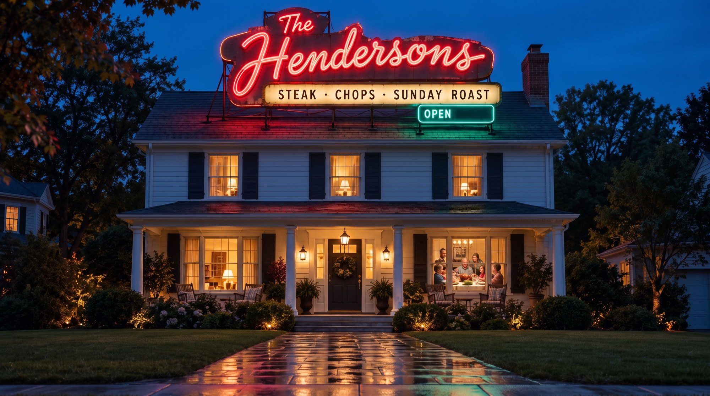
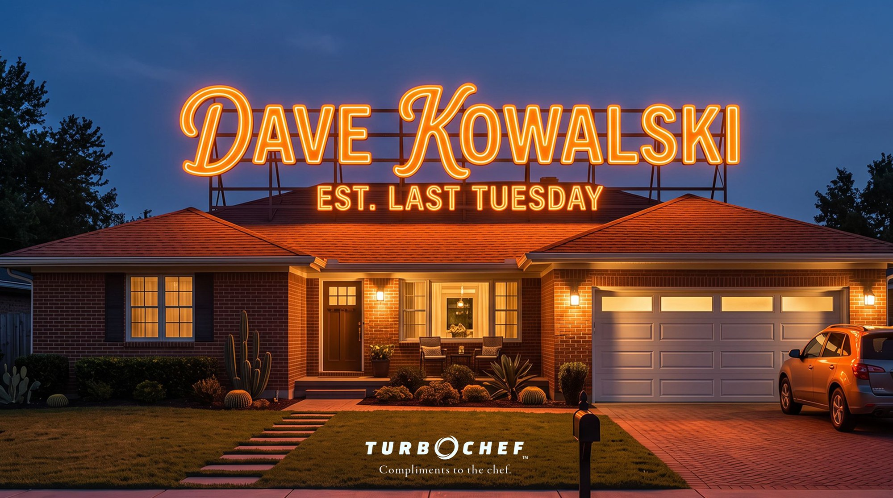
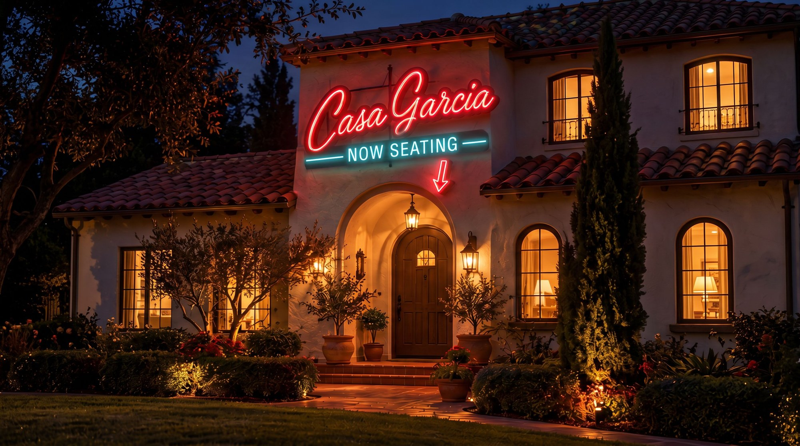
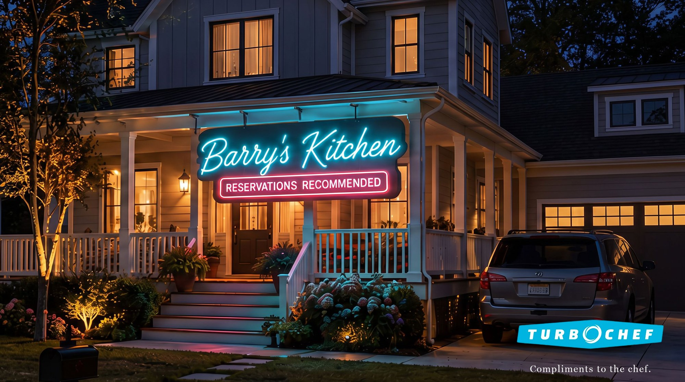
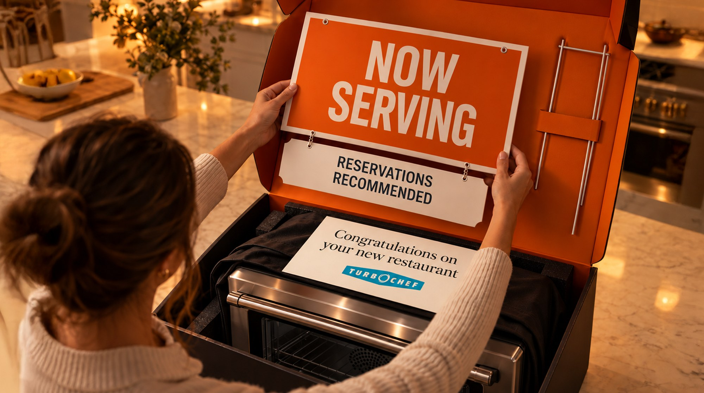
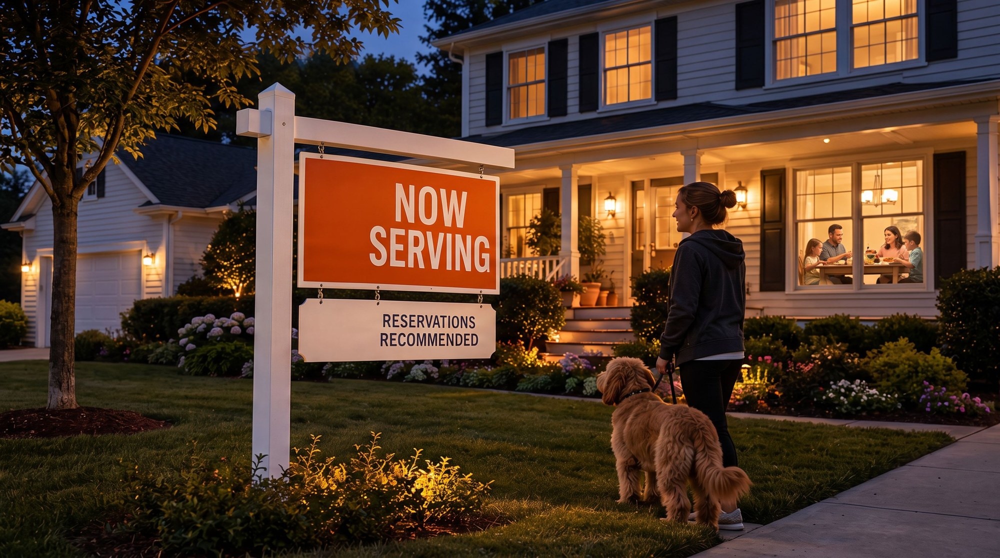

TURBOCHEF
Compliments to the chef.
A spec campaign for TurboChef's home ovens: restaurant-grade, home-cooked. Restaurant-grade speed and searing turn ordinary houses into the best restaurants on the block, from rooftop neon to a lawn sign that ships in the box. Visuals AI-assisted.
The insight
The insight
TurboChef builds the ovens restaurants run on. Now there's one for the home.
The idea
Compliments to the chef.
Out-of-home: new restaurants in the neighborhood
Billboards that make you look twice: real homes with restaurant neon on the roof. Every family that owns a TurboChef gets a name in lights.




Social: dinner service at home
Six-second loops for Reels and TikTok, built to land with the sound off. Each one ends on the payoff with the TurboChef lockup over the final frame.
In the box: the sign comes with the oven
Every oven ships with a welcome card and a "Now Serving" lawn sign. Buyers put it in the yard, neighbors stop and ask, and the campaign spreads street by street.

